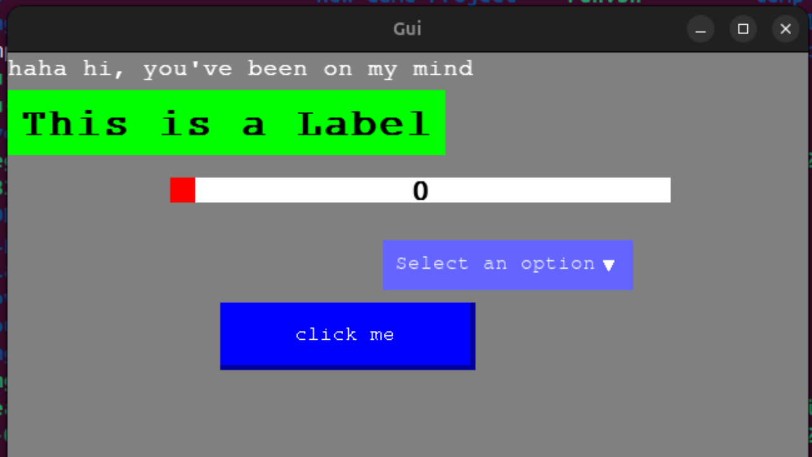

C and C++ has some good gui libraries like qt, gtk, nuklear and imgui but all of are not easy to use and makes you write alot of boiler plate codes. So i decided to create mine from Scratch with focus on easy of use
The image above is demo of Sweet; my Gui library. The demo shows a simple showcase of text, label, slider, dropdown and button widgets.
C, SDL graphics framework, clang compiler.
I used Standard C libraries along side the SDL framework:
#include<stdio>
#include<stdlib>
#include<SDL2/SDL.h>